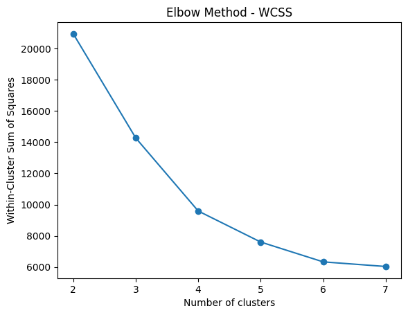
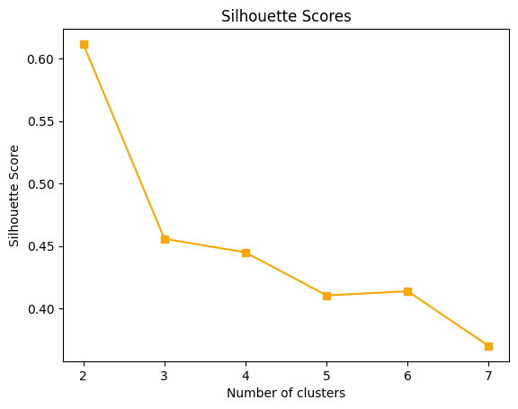
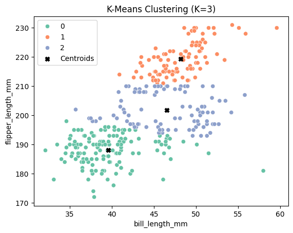
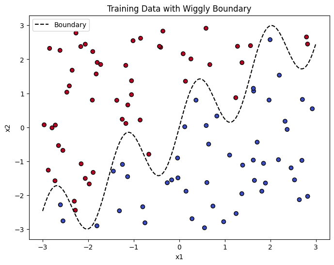
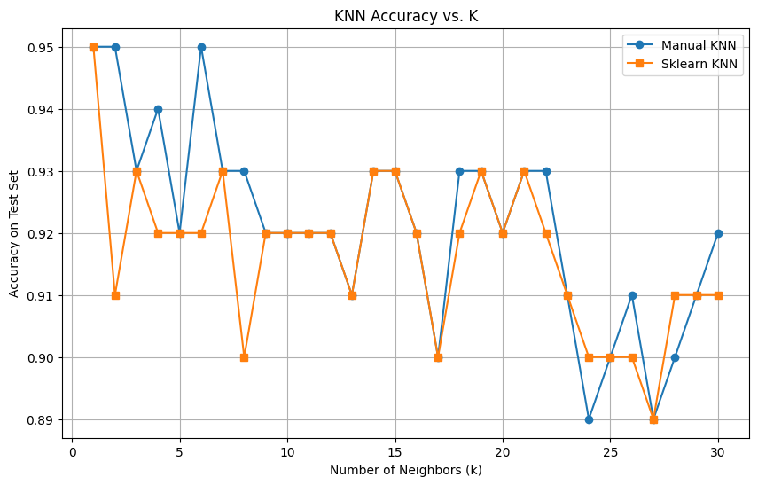

Unsupervised and Supervised Learning: K-Means and K-Nearest Neighbors Applications
Introduction
In this project, I explore two fundamental types of machine learning techniques: unsupervised learning and supervised learning.
For the unsupervised task, I implement k-means clustering on the Palmer Penguins dataset to uncover natural groupings among penguins based solely on physical measurements.
For the supervised task, I simulate a synthetic dataset and apply both a manually implemented and a library-based version of the K-Nearest Neighbors (KNN) algorithm. This allows me to evaluate how well KNN performs in a binary classification setting involving a complex, non-linear decision boundary.
Through both exercises, I aim to demonstrate the key logic, visualization, and evaluation metrics for these algorithms.
1. K-Means
In this analysis, I applied the k-means clustering algorithm to a subset of the Palmer Penguins dataset using two features: bill length (mm) and flipper length (mm). The goal was to group the penguins into clusters without using the species label (i.e., unsupervised learning).
Data Preprocessing
The Palmer Penguins dataset is a widely used alternative to the classic Iris dataset for data visualization and clustering tasks. It contains biological and geographical measurements for three species of penguins observed on the Palmer Archipelago in Antarctica. This dataset is particularly useful for exploring unsupervised machine learning methods due to its rich and interpretable numeric features.
Key Features:
species: The species of the penguin (Adelie, Gentoo, or Chinstrap).island: The island where the penguin was observed (Biscoe, Dream, or Torgersen).bill_length_mm: Length of the penguin’s bill (in millimeters).bill_depth_mm: Depth of the penguin’s bill (in millimeters).flipper_length_mm: Length of the flipper (in millimeters).body_mass_g: The body weight of the penguin (in grams).sex: Gender of the penguin (male or female).year: The year the measurement was recorded (2007–2009).
The dataset was filtered to remove any rows with missing values in the selected columns. This left us with clean numerical data appropriate for clustering.
import pandas as pd
import numpy as np
import matplotlib.pyplot as plt
from sklearn.cluster import KMeans
from sklearn.metrics import silhouette_score
import seaborn as sns
penguin = pd.read_csv('palmer_penguins.csv')
df = penguin[['bill_length_mm', 'flipper_length_mm']].dropna()
# Elbow method & silhouette scores
wcss = []
sil_scores = []
K_range = range(2, 8)
for k in K_range:
kmeans = KMeans(n_clusters=k, random_state=42)
kmeans.fit(df)
wcss.append(kmeans.inertia_)
sil = silhouette_score(df, kmeans.labels_)
sil_scores.append(sil)Choosing the Optimal Number of Clusters
To determine the appropriate number of clusters (K), I used two metrics:
Elbow Method: Evaluates the within-cluster sum-of-squares (WCSS) for different values of K. A sharp “elbow” in the curve suggests an optimal K.
Silhouette Score: Measures how similar a point is to its own cluster versus other clusters.
The plots below show both evaluation metrics:
 
From both plots, K = 3 appears to be a reasonable choice.
# Plot WCSS
plt.figure()
plt.plot(K_range, wcss, marker='o')
plt.title("Elbow Method - WCSS")
plt.xlabel("Number of clusters")
plt.ylabel("Within-Cluster Sum of Squares")
plt.show()
# Plot Silhouette Scores
plt.figure()
plt.plot(K_range, sil_scores, marker='s', color='orange')
plt.title("Silhouette Scores")
plt.xlabel("Number of clusters")
plt.ylabel("Silhouette Score")
plt.show()
# Apply KMeans with optimal K
optimal_k = 3
kmeans = KMeans(n_clusters=optimal_k, random_state=42)
df['cluster'] = kmeans.fit_predict(df)
# Plot final clusters
plt.figure()
sns.scatterplot(data=df, x='bill_length_mm', y='flipper_length_mm', hue='cluster', palette='Set2')
plt.scatter(kmeans.cluster_centers_[:,0], kmeans.cluster_centers_[:,1], c='black', marker='X', label='Centroids')
plt.title(f"K-Means Clustering (K={optimal_k})")
plt.legend()
plt.show()Final Clustering Result
I ran the k-means algorithm with K = 3 and visualized the clusters:

Each cluster is color-coded, and the centroids are marked as black “X” symbols. The separation between clusters appears intuitive and meaningful given the input dimensions.
2. K Nearest Neighbors
Data Generation
To test the performance of the K-Nearest Neighbors (KNN) algorithm, I generated a synthetic 2D dataset with two features x1 and x2. The binary outcome y is determined by whether x2 lies above or below a nonlinear boundary defined as:
\[ \text{boundary} = \sin(4x_1) + x_1 \]
# Generate training data
np.random.seed(42)
n = 100
x1 = np.random.uniform(-3, 3, n)
x2 = np.random.uniform(-3, 3, n)
boundary = np.sin(4 * x1) + x1
y = (x2 > boundary).astype(int)
train_df = pd.DataFrame({'x1': x1, 'x2': x2, 'y': y})
# Visualize with boundary
plt.figure(figsize=(8, 6))
plt.scatter(train_df['x1'], train_df['x2'], c=train_df['y'], cmap='coolwarm', edgecolors='k')
x_line = np.linspace(-3, 3, 300)
plt.plot(x_line, np.sin(4 * x_line) + x_line, color='black', linestyle='--', label='Boundary')
plt.xlabel("x1")
plt.ylabel("x2")
plt.title("Synthetic Training Data with Wiggly Boundary")
plt.legend()
plt.show()
Points above the boundary are labeled 1, and those below are labeled 0. I generated 100 training points and 100 testing points with different random seeds to ensure independence.
I implemented the KNN classifier manually by:
Calculating Euclidean distance between each test point and all training points,
Selecting the k closest training points,
Predicting the majority class label from these neighbors.
This method was compared to scikit-learn’s KNeighborsClassifier for validation. For each k in the range from 1 to 30, I computed the prediction accuracy on the test set using both the manual and built-in KNN implementations.
Conclusion

This K-Nearest Neighbors (KNN) experiment on synthetic data confirms several key insights:
The dataset was purposefully constructed to contain a non-linear, “wiggly” decision boundary, which is well-suited for local learning algorithms like KNN.
Both the manual and scikit-learn implementations of KNN performed consistently and achieved high classification accuracy on the test set.
The highest accuracy (95%) was observed when
k = 1ork = 6, suggesting that smaller neighborhood sizes are best at capturing the intricate boundary in the data.As
kincreases beyond 15–20, the model becomes overly smooth and begins to underfit, resulting in slightly lower accuracy (~90%).
Optimal k appears to lie in the range of 1–10, balancing local sensitivity with noise reduction. This underscores the importance of tuning hyperparameters like k for models that rely on instance-based learning.
Overall, this exercise demonstrates the value of interpretable models like KNN when applied to low-dimensional, structured data.
from collections import Counter
from sklearn.neighbors import KNeighborsClassifier
from sklearn.metrics import accuracy_score
# ----- Step 1: Generate training data -----
np.random.seed(42)
n = 100
x1_train = np.random.uniform(-3, 3, n)
x2_train = np.random.uniform(-3, 3, n)
boundary_train = np.sin(4 * x1_train) + x1_train
y_train = (x2_train > boundary_train).astype(int)
train_df = pd.DataFrame({'x1': x1_train, 'x2': x2_train, 'y': y_train})
# ----- Step 2: Generate test data -----
np.random.seed(123)
x1_test = np.random.uniform(-3, 3, n)
x2_test = np.random.uniform(-3, 3, n)
boundary_test = np.sin(4 * x1_test) + x1_test
y_test = (x2_test > boundary_test).astype(int)
test_df = pd.DataFrame({'x1': x1_test, 'x2': x2_test, 'y': y_test})
# ----- Step 3: Plot training data with boundary -----
plt.figure(figsize=(8, 6))
plt.scatter(train_df['x1'], train_df['x2'], c=train_df['y'], cmap='coolwarm', edgecolors='k')
x_line = np.linspace(-3, 3, 300)
plt.plot(x_line, np.sin(4 * x_line) + x_line, color='black', linestyle='--', label='Boundary')
plt.xlabel("x1")
plt.ylabel("x2")
plt.title("Training Data with Wiggly Boundary")
plt.legend()
plt.show()
# ----- Step 4: Implement KNN manually -----
def knn_predict(train_X, train_y, test_X, k):
preds = []
for test_point in test_X:
dists = np.sqrt(np.sum((train_X - test_point) ** 2, axis=1))
nearest_k = np.argsort(dists)[:k]
nearest_labels = train_y[nearest_k]
most_common = Counter(nearest_labels).most_common(1)[0][0]
preds.append(most_common)
return np.array(preds)
# ----- Step 5: Compare accuracy over k = 1 to 30 -----
train_X = train_df[['x1', 'x2']].values
train_y = train_df['y'].values
test_X = test_df[['x1', 'x2']].values
test_y = test_df['y'].values
acc_manual = []
acc_sklearn = []
for k in range(1, 31):
# Manual KNN
pred_manual = knn_predict(train_X, train_y, test_X, k)
acc_manual.append(np.mean(pred_manual == test_y))
# Scikit-learn KNN
clf = KNeighborsClassifier(n_neighbors=k)
clf.fit(train_X, train_y)
pred_sklearn = clf.predict(test_X)
acc_sklearn.append(accuracy_score(test_y, pred_sklearn))
# ----- Step 6: Plot accuracy over different k -----
plt.figure(figsize=(10, 6))
plt.plot(range(1, 31), acc_manual, label='Manual KNN', marker='o')
plt.plot(range(1, 31), acc_sklearn, label='Sklearn KNN', marker='s')
plt.xlabel("Number of Neighbors (k)")
plt.ylabel("Accuracy on Test Set")
plt.title("KNN Accuracy vs. K")
plt.legend()
plt.grid(True)
plt.show()Summary
This dual analysis demonstrates how both unsupervised and supervised learning can be effectively applied to explore patterns and make predictions in structured datasets.
K-Means successfully clustered penguin observations without labels, with K = 3 emerging as the optimal number of clusters according to both the Elbow Method and Silhouette Score.
KNN performed well on a synthetic binary classification problem, achieving a test accuracy of up to 95% with smaller values of
k. The comparison between manual and built-in implementations confirms that the algorithm’s logic is simple yet powerful.
Overall, these tasks highlight the value of visualization, evaluation metrics, and careful model tuning in both exploratory and predictive modeling workflows.